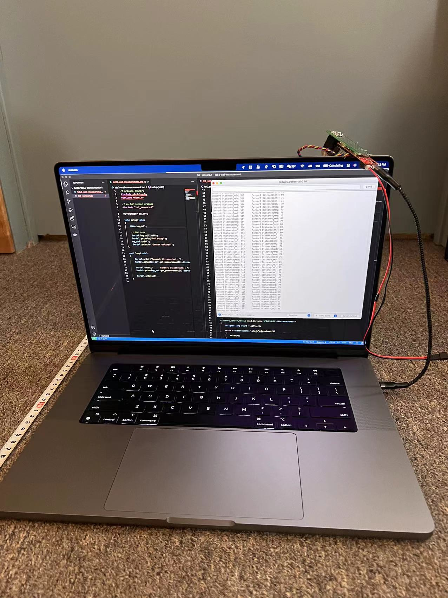
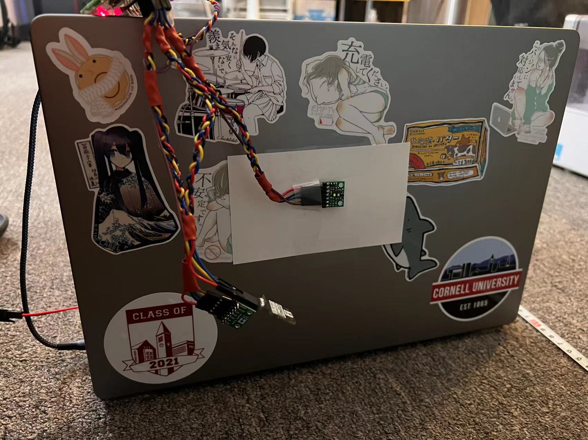
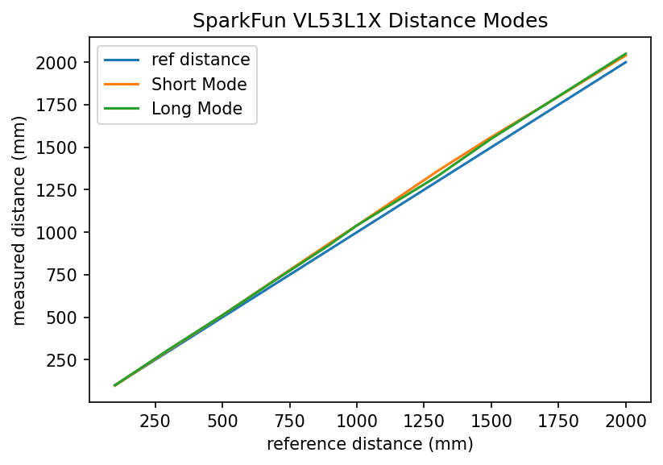
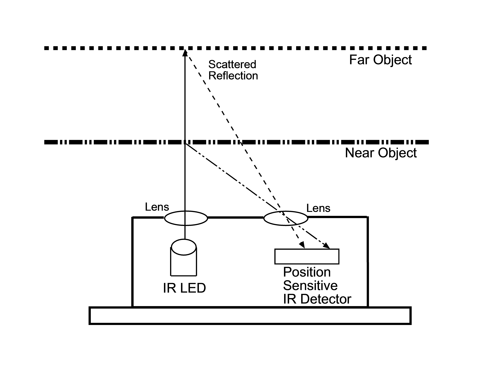
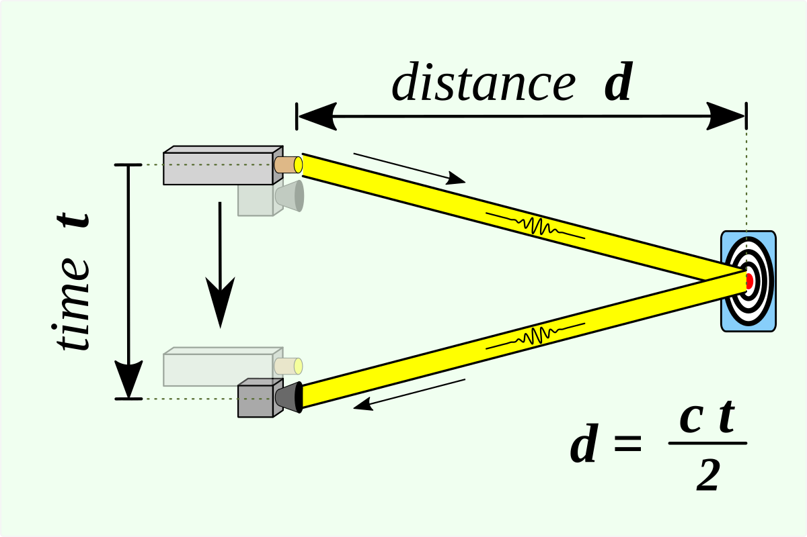

WARNING: This writeup is long because the lab is long... Please be aware...
The goal of this lab is to connect the sensors to the robot, and to characterize the capabilities of the sensors we are using. Intuitively, the capabilities of our robot is limited by the capabilities of the sensors. (we don't want the robot to be randomly crashing on things...) Therefore, the faster our sensors can sample data, the faster the robot can move. Similarly, more accurate sensors lead to better control of the robot. In this course, the robot has three external sensing components: two Time-of-Flight Sensors (ToF) and an Inertial Measurement Unit (IMU). These sensors are provided by the course staff and they all come in the form of breakout boards.
When it comes to sensors, it's important to have access to the sensors' specifications as well as their API libraries (unless we're writing our own which we are not). For the ToF sensor (VL53L1X), we have access to the manual, the datasheet, and the headerfile of the corresponding Arduino library. For the IMU (ICM 20948), we have access to its datasheet and the Arduino library for controlling this sensor.
Hooking up the sensors
All the external sensors communicate with the Artemis board via I2C protocol. The Artemis board is the I2C controller, and the sensor components are I2C targets. (Many are more familiar with the nomenclature "master/slave", which was updated in I2C Spec Rev. 07.)
Wiring between the Artemis board and the sensor boards are straight-forward. Coming from the I2C protocl, each sensor board needs at least four connections (
Vin,
Ground,
SDA, and
SCL) to the Artemis controller for data exchange to work. The picture below shows the pinout of each board. I have soldered jump wire connectors
onto the boards.
 Pinout of sensor boards. The green one on top is the ToF sensor. The black one below is the IMU.
Notice that both boards have the four necessary signal pins available. In a "one controller, many target" setup, the same signals from each board share the same electrical node, e.g.,
the
Pinout of sensor boards. The green one on top is the ToF sensor. The black one below is the IMU.
Notice that both boards have the four necessary signal pins available. In a "one controller, many target" setup, the same signals from each board share the same electrical node, e.g.,
the SDA pin of the Artemis board is connected to the SDA pin of both ToF boards and the IMU board.
With some soldering work done, the Artemis board essentially turns into Doc Ock... See the picture below
 The Artemis board connected to the sensors.
To summarize my wiring:
The Artemis board connected to the sensors.
To summarize my wiring:
- Some jump wire pins are soldered to a protoboard. The protoboard is used for better cable management. Connections are made on the back.
- Both ToF sensors'
XSHUTpins are wired to a GPIO pin (PIN7&PIN8used) on the Artemis board (with jump wire connection). This is needed because both ToF sensors share the same I2C address. - Cables are braided because I found it fun.

 Shows the wiring between the Artemis board and the sensors (two perspectives).
Shows the wiring between the Artemis board and the sensors (two perspectives).
Software preparation
Two Arduino libraries need to be installed so that we can access the API for interacting with the sensors.- SparkFun VL53L1X 4m laser distance sensor library (source code)
- SparkFun 9DOF IMU Breakout - ICM 20948 (source code)
Lab 3(a): Time of Flight sensors
I2C addresses
To instructors: I didn't run the Wire example since it doesn't work well... I jumped straight into the read-distance example, and completed the two sensor setup.
Sensing modes and sensor characterizations
The API document claims there are three distance modes in in section 2.5.3. However, the SparkFun API headerfile only provides two distance modes. Therefore, we assume only two distance modes are accessible by the user (myself). The table below summarizes the pros/cons of each mode. To determine which mode to be used, I conducted some characterizations on the sensors.
| Possible distance modes | Maximum distance | Benefit/comments |
|---|---|---|
| Short (default) | Up to 1.3 m | Better ambient immunity |
| Long | Up to 4 m | Maximum distance |
1. Distance modes and accuracy
To investigate the impact of distance modes, I conducted a sweep of measured distances and the actual distances for the two modes. The sensor module is mounted on the back of my laptop. The sensor module is facing a wall, and a ruler is used to measure the distance between itself and the wall. Measured data are streamed to the laptop through the serial port. Pictures below shows the setup.  The laptop is facing the wall. Artemis is connected to the laptop, and data is read on the Serial monitor.  The sensor module is mounted on the back of the laptop. The paper is necessary because the laptop surface is conductive. (took me a while to debug)
Data are visualized with Matplotlib.  Plotting the ref distance and the measured distances with two different measurement modes. Some important findings include:
- Both short and long mode data are off for longer ref distance. This could be due to misalignments of the laptop and the wall. Just looking at the green and orange line, they are consistent.
- The short mode is rated for up to 1.3m, but turns out it is doing okay when going up to 2m.
87 ms while another sensor only needs 3 ms. The reason is unknown after some investigation efforts. The ranging time is independent of distance and/or distancing modes.
2. Lighting conditions, colors, and textures
The impact of lighting conditions, colors, and textures are also investigated. The sensor is placed 30 cm away from a white box. Their positions are kept the same throughout this experiment, while other factors are tuned. 50 measurements are taken, and the mean is reported. Because 30 cm is short, the short distancing mode is chosen throughout. The table blow summarizes my findings.
| Distance modes | Color | Texture | Lighting | Measured Distance (mm) |
|---|---|---|---|---|
| Short | White | Smooth | Ambient (LED) | 294 |
| Short | White | Smooth | Bright Incandescent | 297 |
| Short | White | Smooth | Dark | 301 |
| Short | White | Cloth | Ambient (LED) | 298 |
| Short | Blue | Cloth | Ambient (LED) | 300 |
Code Snippets
A wrapper class, MyToFSensor, is created to interface with the ToF sensor modules. The details of this wrapper class is attached to the end of this page. This section assumes the existance of this class and provides a high-level view of how the Artemis is set up for this experiment. The program simply gets the measurement and the time for measuring, and pipes the result to the Serial monitor for me to view.
// Arduino library
#include <Arduino.h>
#include <Wire.h>
// my ToF sensor wrapper
#include "tof_sensors.h"
MyToFSensor my_tof;
void setup(void)
{
Wire.begin();
// TOF init
Serial.begin(115200);
Serial.println("ToF setup");
my_tof.init();
Serial.println("Sensor online!");
}
void loop(void)
{
Serial.print("Sensor0 Distance(mm): ");
distance_sensor_result sensor0_result = my_tof.get_measurement(0);
Serial.print(sensor0_result.distance);
Serial.print(" Sensor0 time(ms): ");
Serial.print(sensor0_result.measuring_time);
Serial.print(" Sensor1 Distance(mm): ");
distance_sensor_result sensor1_result = my_tof.get_measurement(1);
Serial.print(sensor1_result.distance);
Serial.print(" Sensor1 time(ms): ");
Serial.print(sensor1_result.measuring_time);
Serial.println();
}
Working with two sensors simultaneously
There are a total of 2 ToF sensor modules on the same I2C channel. They have the same I2C address, so additional setups are needed to use them simultaneously.
During sensor initialization, the XSHUT pin of one sensor is asserted LOW. Then the init method of the other sensor is called, and subsequently its I2C address is modified. After that, the XSHUT pin is pulled high, bring the first sensor back online with the default address. At this point, two ToF sensors have different I2C addresses, and they can be used simultaneously. Code snippet attached below.
pinMode(SHUTDOWN_PIN_0, OUTPUT);
pinMode(SHUTDOWN_PIN_1, OUTPUT);
digitalWrite(SHUTDOWN_PIN_0, LOW);
digitalWrite(SHUTDOWN_PIN_1, HIGH);
if (this->distanceSensor_1.begin() != 0) // Begin returns 0 on a good init
{
Serial.println("Sensor 1 failed to begin. Please check wiring. Freezing...");
while (1)
;
}
this->distanceSensor_1.setI2CAddress(0x60);
digitalWrite(SHUTDOWN_PIN_0, HIGH);
if (this->distanceSensor_0.begin() != 0) // Begin returns 0 on a good init
{
Serial.println("Sensor 0 failed to begin. Please check wiring. Freezing...");
while (1)
;
}
A1: Discussion on infrared transmission distance sensors
Many distance sensors are based on infrared transmission, including IR distance sensors, LiDAR, and Time-of-Flight sensors.
IR distance sensors are cheap. Measurement is based on the reflected angle of the beam. The picture below is an intuitive picture of its working principle.  IR distance sensor working principle. Source: https://os.mbed.com/forum/mbed/topic/1048/?page=1#comment-6420 Despite its cheap price and better relibaility than an even-cheaper ultrasonic proximity sensor, it is not able to measure accurately for long distance. As the distance gets longer, the change of angle becomes smaller and undetectable. They also fail if the object is highly reflective (like a mirror).
ToF sensors take advantages of the constant speed of light. The picture below shows its principle. The emitter sends a pulse of EM wave, which is reflected by the objected and later picked up by the receiver. The distance between the sensor and the object and then be calculated from the time between the emitter sends the pulse and the receiver picks up the pulse.  ToF sensors principle. Source: https://en.wikipedia.org/wiki/Time_of_flight ToF sensors are better in long distance sensing, and the sampling frequency is typically higher. However, this comes with the cost of being more expensive than IR proximity sensors.
LiDAR uses a similar principle as ToF sensors: pulsed lasers are used, and the travelling time of the pulsed is used to calculate the distance. However, LiDAR typically uses an array of emitters and receivers, making them better in doing 3D sensing and imaging, and they are more robust than ToF sensors. This comes with the cost of being very expensive compared to other IR-based sensors. (fancy!)
Reference for writing this section:
- https://www.makeuseof.com/tof-and-lidar-difference/
- https://www.seeedstudio.com/blog/2019/12/23/distance-sensors-types-and-selection-guide/
- https://www.sparkfun.com/distance_sensor_comparison_guide
A2: Timing budget
Recall that earlier in this article, I reported that one sensor needs a consistent 87 ms while another sensor only needs 3 ms when doing a measurement. This section could shine some light on why that was the case.
Each ToF sensor can be configured with a timing budget and an inter-measurement period, both in milliseconds. Timing budget is the time required by the sensor to perform one range measurement, and the inter-measurement period is the delay between two ranging operations. The minimum and maximum timing budgets are [20 ms, 1000 ms].
I first read out the default values.
Serial.print("Sensor 0 timing budget: ");
Serial.println(this->distanceSensor_0.getTimingBudgetInMs());
Serial.print("Sensor 0 intermeasurement period: ");
Serial.println(this->distanceSensor_0.getIntermeasurementPeriod());
Serial.print("Sensor 1 timing budget: ");
Serial.println(this->distanceSensor_1.getTimingBudgetInMs());
Serial.print("Sensor 1 intermeasurement period: ");
Serial.println(this->distanceSensor_1.getIntermeasurementPeriod());
The sensors have the following default configurations:
| Sensor Number | Intermeasurement Period (ms) | Timing Budget (ms) |
|---|---|---|
| 0 | 100 | 0 |
| 1 | 98 | 0 |
Then I poked with the numbers and obtained the following numbers.
| Sensor Number | Intermeasurement Period (ms) | Timing Budget (ms) | Measuring Time (ms) |
|---|---|---|---|
| 0 | 0 | 20 | Fail to take measurements |
| 1 | 0 | 20 | Fail to take measurements |
| 0 | 20 | 20 | 4 |
| 1 | 20 | 20 | 10 |
| 0 | 100 | 100 | 60 |
| 1 | 100 | 100 | 80 |
A longer intermeasurement period can save energy (the module goes into low-power mode when idle). However, energy is out of our concern since the robot is not designed to move for a long time. It is expected to move FAST! Therefore, I decided to set both values to 20 ms for subsequent labs because I want the robot to be able to take samples as quickly as possible. Such that it can move and respond as fast as possible!
A3: Signal and Sigma: is the measurement valid?
The driver uses two parameters to qualify the ranging measurement: signal and sigma. If signal or sigma are outside the limits, the ranging is flagged as invalid.
Sigma is expressed in mm and is the estimation of the standard deviation of the measurement. The signal rate measurement represents the amplitude of the signal reflected from the target and detected by the device. Therefore, a small sigma and a large signal corresponds to a strong confidence in the measurement. The driver associates these two values with a tolerance limit. If signal or sigma are outside the limits, the ranging is flagged as invalid. The video below shows the results of running Example3_StatusAndRate of the ToF sensor library.
Example3_StatusAndRate.
In the demo video, the ToF sensor is quickly flipped around. Whenever flipping happens, there are one or two data points where the range status shows "Signal fail" or "Wrapped target fail" (no signal detected). This provides a mean for us to filter out invalid readings. In future labs, we can implement checks against these invalid signals to make our robot more robust, especially when it is moving fast.